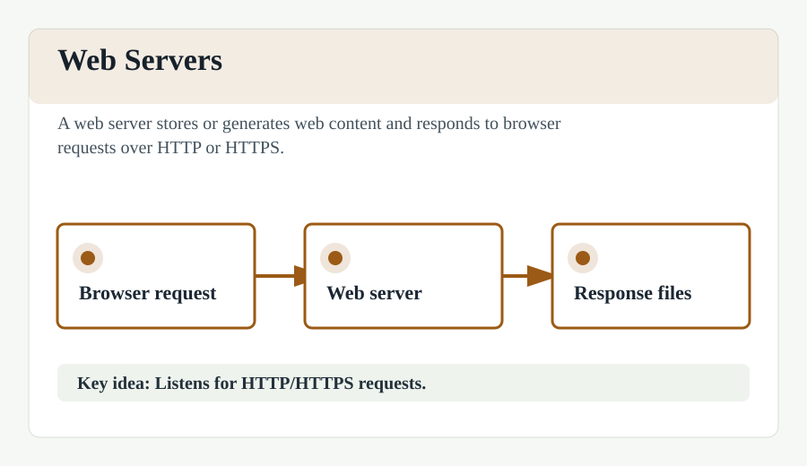

Web Servers
A web server is a computer system that stores, processes, and delivers web pages to users. The primary function of a web server is to store, process and deliver web pages to clients.
Web servers use the HTTP (Hypertext Transfer Protocol) to serve the files that form web pages to users, in response to their requests, which are forwarded by their computers' HTTP clients. Dedicated computers and appliances may be referred to as web servers as well, or the software that runs on them.
